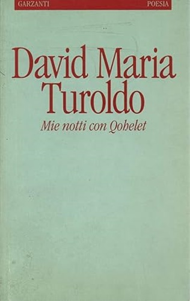
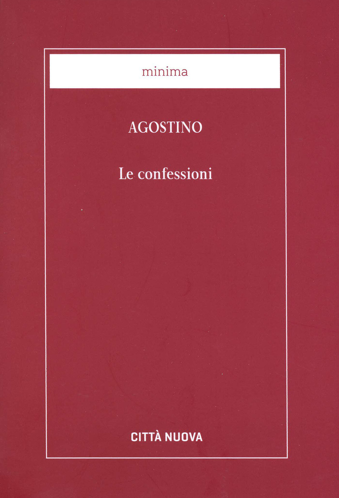

10:05 · 8 OPERE
Paolo de Benedetti sul "non c'indurre in tentazione".
Il filo del discorso
La lettura di un saggio di Paolo De Benedetti affronta la domanda rivolta a Dio nella preghiera del Padre nostro. Il rapporto fra tentazione, prova e male è discusso attraverso Turoldo, Abramo, Giobbe e i racconti evangelici. Al centro emerge un Dio che entra in relazione con l’essere umano e accetta il rischio della fiducia. Il confronto con Agostino conduce alla sofferenza innocente e ai limiti delle spiegazioni che pretendono di giustificarla; il finale lascia aperta la domanda, invece di risolverla in una formula.
I libri nel discorso

Mie notti con Qohelet
Note sul riferimento
Copertina: Garzanti · 1995
Copertina autentica controllata visivamente. Edizione di riferimento; non identifica l’esemplare usato o citato nel video.
Titolo, autore e riferimento Garzanti Milano 1992 sono pronunciati nella lettura.

Giobbe
Note sul riferimento
Copertina del volume completo: San Paolo, 2014 · Nuova Versione dai Testi Antichi · edizione di riferimento
Giobbe è un libro della Bibbia. L’immagine mostra il volume completo San Paolo di riferimento, non un’edizione autonoma del singolo libro e non una versione identificata nella citazione.
Giobbe è nominato e ripreso nel confronto fra i primi capitoli del libro e la prova di Abramo.

Qoèlet (Ecclesiaste)
Note sul riferimento
Copertina: Adelphi, Biblioteca Adelphi 414, 2001
Edizione autonoma del libro biblico, versione e commenti di Guido Ceronetti. Non è una copertina della Bibbia integrale né un’edizione confermata nel video.
Qohelet è nominato insieme a Giobbe dopo il riferimento a Turoldo.

Genesi
Note sul riferimento
Copertina: Einaudi, I libri della Bibbia / Einaudi Tascabili, 2000; introduzione di Steven Rose
Copertina dell’edizione autonoma Genesi, nella serie I libri della Bibbia, con introduzione di Steven Rose. Edizione scelta come riferimento iconografico; nessuna edizione è confermata nel video.
Riferimento a Genesi 22 e alla prova di Abramo; nel finale viene richiamato anche Genesi 3.
Vangelo secondo Matteo
Note sul riferimento
Copertina del volume completo: San Paolo, 2014 · Nuova Versione dai Testi Antichi · edizione di riferimento
Vangelo secondo Matteo è un libro della Bibbia. L’immagine mostra il volume completo San Paolo di riferimento, non un’edizione autonoma del singolo libro e non una versione identificata nella citazione.
Sono richiamati Matteo 4,10 e Matteo 16,23 nel confronto fra i due rimproveri rivolti a Satana.

Confessioni
Note sul riferimento
Copertina: Città Nuova · 1995
Copertina autentica controllata visivamente. Edizione di riferimento; non identifica l’esemplare usato o citato nel video.
Sono annunciati Confessioni, libro VII, capitolo 12.
Vangelo secondo Luca
Note sul riferimento
Copertina del volume completo: San Paolo, 2014 · Nuova Versione dai Testi Antichi · edizione di riferimento
Vangelo secondo Luca è un libro della Bibbia. L’immagine mostra il volume completo San Paolo di riferimento, non un’edizione autonoma del singolo libro e non una versione identificata nella citazione.
La preghiera di Gesù è riferita esplicitamente a Luca 22,42.
Isaia
Note sul riferimento
Copertina del volume completo: San Paolo, 2014 · Nuova Versione dai Testi Antichi · edizione di riferimento
Isaia è un libro della Bibbia. L’immagine mostra il volume completo di riferimento San Paolo, non un’edizione autonoma di Isaia né una versione identificata nella citazione.
Richiamo a Isaia 45,15 e al Dio nascosto.